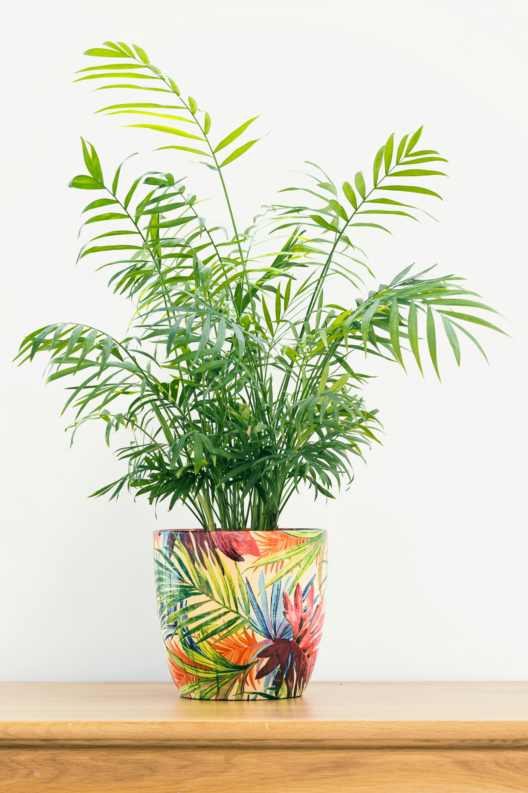

Plant Library
Parlor Palm
A graceful, slow-growing palm with soft, arching fronds that brings an easy elegance to indoor spaces.
Before You Buy
Is this plant right for your home?
Parlor Palms bring a softer, more graceful look to a room and can adapt to indoor conditions better than their delicate appearance might suggest.
You want a graceful, leafy plant that works well in living spaces, bedrooms, or offices.
You want something that grows quickly or prefer a plant that can tolerate very dry conditions without extra care.
Parlor Palms are naturally slow-growing, so patience is part of their appeal.
Care Basics
Keep things steady and let it take its time.
Parlor Palms don't need constant attention, but they do appreciate consistent care and protection from harsh conditions.
Let the soil dry slightly
Allow the upper portion of the soil to dry before watering again rather than keeping it constantly wet.
Choose gentle light
Medium to low indirect light can work well, while harsh direct sunlight can damage the foliage.
Give it room to grow
Parlor Palms are slow-growing, so avoid constantly moving or repotting them simply because growth seems gradual.
What Usually Goes Wrong
When the fronds change, look at the environment first.
Parlor Palms can show stress through their foliage. Start by checking light, moisture, and the surrounding conditions.
Brown leaf tips
Dry conditions, inconsistent watering, or very dry indoor air can contribute to browning.
Yellowing leaves
Check the soil before watering again. Consistently wet conditions can stress the roots.
Dry or faded fronds
Harsh direct sunlight or very dry conditions can cause the foliage to lose its healthy appearance.
Good Match For
This might be your plant if...
You want a graceful, slower-growing houseplant that adds a soft, leafy feel to your space without becoming a constant project.
Find your plant match →